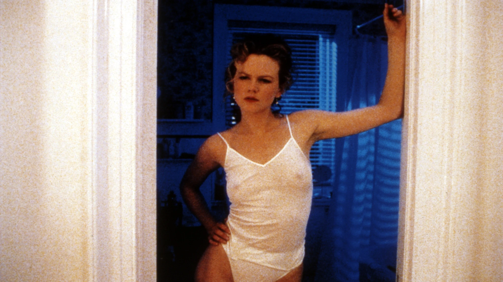
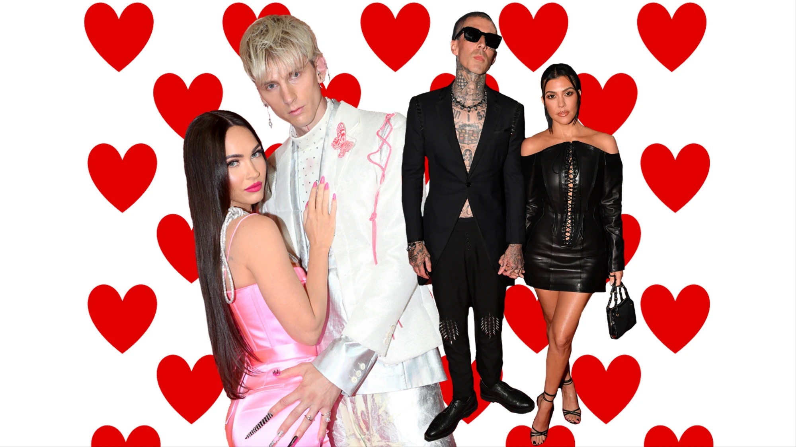

7 cult Christmas movies for people who hate Christmas
From horror films to lighthearted classics, if you're feeling anxious about the holidays this year, we recommend finding comfort in these films.

What was with the y2k sex tape leak obsession?
Before 2014's 'The Fappening' there was Pamela Anderson, Paris Hilton and Kim K. We examine the history and impact of the intrusive phenomenon.
